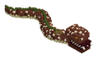

Bestiario › Jefe


Variantes de color
Escila la Morena de las Bodegas
Morena Gigante de las Bodegas
Hostil Nadador Jefe
Morena gigante de piel verde oliva moteada de amarillo, cubierta de percebes y cicatrices, con un arpón de hueso clavado en el cuello; asoma por los agujeros del barco hundido para morder.
11Nivel
55,6Vida
6,13Daño
3Armadura
0Regeneración
7Velocidad
Dónde aparece
| Profundidad | 0 – 15 bloques |
|---|---|
| Jefe de mazmorra | La Gruta de los Naufragios Hundidos (nivel 10) |
Efectos de sus ataques
- Sangrado · 35 % · 3 s (al golpear)
- Empuje · 8 (al golpear)
Botín
| Objeto | Cantidad | Probabilidad |
|---|---|---|
 Arpón de Hueso de Escila Arpón de Hueso de Escila | 1 | 100 % |
 Caña de Sauce y Ámbar Caña de Sauce y Ámbar | 1 | 100 % |
 Ámbar fosilizado Ámbar fosilizado | 2 – 3 | 100 % |
Combate de jefe
Escala ×1 · radio de la arena 48 bloques.
- Por debajo del 50 % de vida: velocidad ×1,3 — «¡Escila sale del casco a morder!»
Archivo de datos: mods/mobs/escila_morena.json · tamaño del vóxel 0,2 m · cuerpo de 2 × 2 bloques